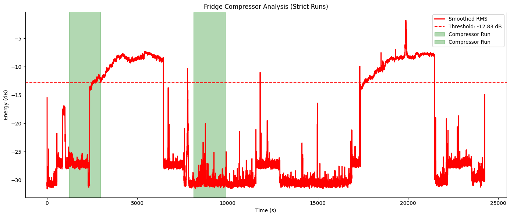
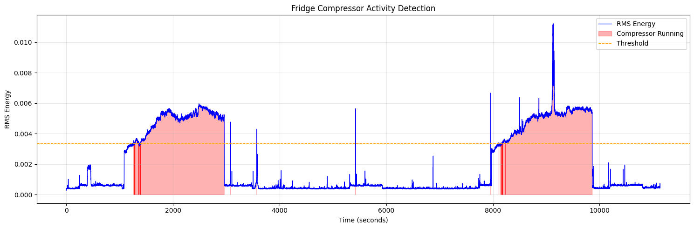
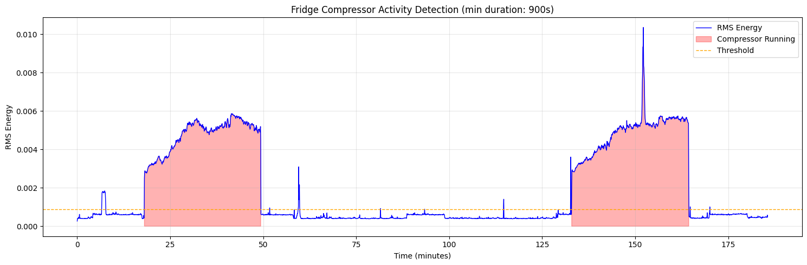
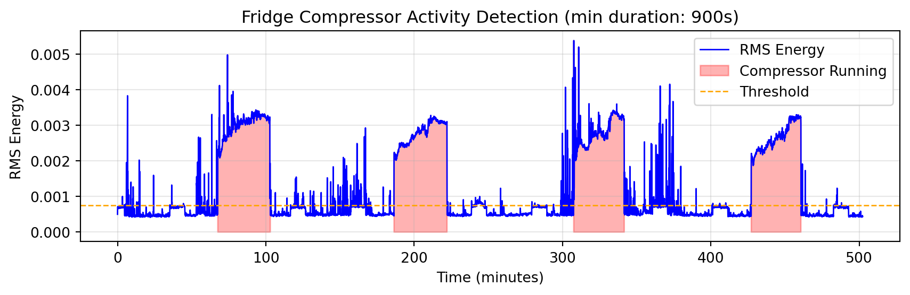

An excuse to try AI assisted coding with Mistral AI’s model.
python
ai assisted coding
fun project
Published
2025-11-14
Backstory
This is a fun little project that I wanted to try for a bit now. You see, my fridge at home is very old. It has always been noisy, but I’ve been able to ignore it for many years.
However, lately, something changed. It feels like the compressor runs louder and more frequently than before (too high of a frequency according to my nerves).
I wanted to quantify two things:
How long the compressor runs for each time,
How long between each compressor run.
I tried timing it manually, but I ran into issues and I didn’t trust my measurements to be accurate. It’s tedious to stay alert to a fridge’s background hum while at home. 😃
I wanted something more scientific and decided to use my iPad and the Voice Memos app to record the sound. I had the vague idea that with the sound waves and timestamps I could reach my goals.
To make this easy, I wanted to record for rather long periods of time and to have clean recordings. So I left the iPad record while I was away for most of the day.
My first idea was to do my analysis with the naked eye, but later I decided that it would be more fun to find a programmatic way to do it. I wanted to put my recently-acquired Mistral AI subscription to the test.
Mistral AI
The company and its models are often mentioned as European alternatives to US firms and their models. I wanted to give it a go and get familiar with it. In addition, Mistral and I are both born in France. These were enough reasons for me to sign up to the Pro tier and to start experimenting.
Codestral is Mistral AI’s generative AI model explicitly designed for code generation tasks.
I went into this with prior Python coding knowledge, but I had never done any audio processing with it. So I gave the LLM a broad description of what I wanted to achieve. I didn’t recommend packages, or specific methods. I only described what I had and what I wanted to achieve very broadly.
Initial prompt:
I have a file “.m4a” which is a recording of my fridge at home. I want to analyse the sound inside of this file to identify each time the fridge’s compressor runs. The sound is very distinctive and I know that in this file there are two compressor runs which lasts very long times. What should I do in Python?
I’ll cut the story short, it disappointed me for the task at hand:
I spent a few hours re-prompting, giving more precise instructions, explicitly asking for things and I never managed to get to something useful. The script was producing code that worked. All the packages used were safe and well-known. It was “analysing” my audio file and producing good data visualisations, but it couldn’t identify the compressor runs properly.
The code produced was very slow to run. It took between 5 and 10 mins each time. This made debugging and iterating very slow.
Finally, in a different session, I tried prompting Mistral on the web. I supposed that my configuration in VS Code might be faulty. At first, it gave me interesting results, but I still stumbled in the last mile and couldn’t get to something useful.

Last analysis generated before I gave up. The dashed red line is supposed to be a threshold used for detection. However, it does not seem to matter since data below the threshold is highlighted as compressor run…
Claude to the rescue!
Frustrated, I decided to copy and paste my initial prompt in Claude’s web UI. I am not a paying subscriber so I am using Claude Sonnet 4.5 on the free tier.
And… To my surprise, it worked in 7 iterations. 🥲
The very first script that it generated was much faster than the one from Codestral: less than ten seconds vs. several minutes before.
Its first attempt produced a graph that didn’t show which sections of the audio were identified as compressor runs. After I asked for it, it produced code that generated this graph. It was very easy to go from there to a finished analysis.

It produced parameters that I could manually tune. It explained to me what these parameters were doing with example values to illustrate. For example:
Lower (e.g., 60): More sensitive, catches quieter compressor runs but may have false positives
Higher (e.g., 80-90): Only catches louder/clearer runs, fewer false positives
After my 7th iteration, I had this output (pretty clean!):

Total segments above threshold: 11
Segments after filtering (≥900s): 2
Detected 2 compressor run(s):
Run 1: 18.07min - 49.33min (duration: 31.27min)
Run 2: 132.93min - 164.40min (duration: 31.47min)
Time between runs:
Between Run 1 and Run 2: 83.60min
The code generated by Claude was better because:
The detection method worked much better from the get-go. And the code generated ran fast from the start too.
It used parameters whose values were based on my audio file. For example, the detection threshold was the nth percentile of a metric computed on the audio data itself. Manually tuning this percentile threshold was intuitive too.
It even proactively handled an edge case: what if the recording stops before the end of a compressor run.
I have the feeling that Claude was more responsive to my input and request for change too. Maybe this has to do with a difference in the length of the context windows (6 times longer for Claude Sonnet 4.5 vs. Codestral in my use case)2.
In any case, this provided me with good findings and lessons learned for future projects, especially if I want to persevere with Mistral.
Back to the analysis
I pointed the final script (code generated by Claude with my manual parameter-tuning) to a recording that lasts eight hours and thirty minutes:
Code
import librosaimport matplotlib.pyplot as pltimport numpy as np# 1. Load the audio fileaudio, sr = librosa.load("audio/fridge-1-clean.m4a", sr=None)# 2. Calculate RMS energy over time windowsframe_length = sr *2# Adjust thishop_length = sr *4# Adjust thisrms = librosa.feature.rms(y=audio, frame_length=frame_length, hop_length=hop_length)[0]# 3. Detect high-energy periods (compressor running)threshold = np.percentile(rms, 65) # Adjust thisis_running = rms > threshold# 4. Get time valuestimes = librosa.frames_to_time(np.arange(len(rms)), sr=sr, hop_length=hop_length)# 5. Extract running segmentsrunning_segments = []start =Nonefor i, running inenumerate(is_running):if running and start isNone: start = ielifnot running and start isnotNone: running_segments.append((times[start], times[i -1])) start =Noneif start isnotNone: # Handle case where recording ends while running running_segments.append((times[start], times[-1]))# 6. FILTER BY MINIMUM DURATIONmin_duration =900# seconds - adjust this based on your compressorrunning_segments_filtered = [ (start, end) for start, end in running_segments if (end - start) >= min_duration]# 7. Create mask for filtered segments onlyis_running_filtered = np.zeros_like(is_running, dtype=bool)for start_time, end_time in running_segments_filtered: mask = (times >= start_time) & (times <= end_time) is_running_filtered |= mask# 8. Visualize with highlighted compressor runsplt.figure(figsize=(9, 3))# Plot the RMS energy in minutestimes_minutes = times /60plt.plot(times_minutes, rms, color="blue", linewidth=1, label="RMS Energy")# Highlight filtered compressor running periodsplt.fill_between( times_minutes,0, rms, where=is_running_filtered, color="red", alpha=0.3, label="Compressor Running",)plt.axhline(threshold, color="orange", linestyle="--", linewidth=1, label="Threshold")plt.xlabel("Time (minutes)")plt.ylabel("RMS Energy")plt.title(f"Fridge Compressor Activity Detection (min duration: {min_duration}s)")plt.legend()plt.grid(True, alpha=0.3)plt.tight_layout()plt.show()# 9. Print detection summaryprint(f"\nTotal segments above threshold: {len(running_segments)}")print(f"Segments after filtering (≥{min_duration}s): {len(running_segments_filtered)}")print(f"\nDetected {len(running_segments_filtered)} compressor run(s):")for i, (start_time, end_time) inenumerate(running_segments_filtered, 1): duration_minutes = (end_time - start_time) /60 start_minutes = start_time /60 end_minutes = end_time /60print(f" Run {i}: {start_minutes:.2f}min - {end_minutes:.2f}min (duration: {duration_minutes:.2f}min)" )# 10. Calculate and print time between runsiflen(running_segments_filtered) >1:print(f"\nTime between runs:")for i inrange(len(running_segments_filtered) -1): end_of_current = running_segments_filtered[i][1] start_of_next = running_segments_filtered[i +1][0] gap_minutes = (start_of_next - end_of_current) /60print(f" Between Run {i +1} and Run {i +2}: {gap_minutes:.2f}min")

Total segments above threshold: 267
Segments after filtering (≥900s): 4
Detected 4 compressor run(s):
Run 1: 67.60min - 103.00min (duration: 35.40min)
Run 2: 186.40min - 222.13min (duration: 35.73min)
Run 3: 307.53min - 341.60min (duration: 34.07min)
Run 4: 427.20min - 460.67min (duration: 33.47min)
Time between runs:
Between Run 1 and Run 2: 83.40min
Between Run 2 and Run 3: 85.40min
Between Run 3 and Run 4: 85.60min
The compressor runs are easily identifiable in the plot and, as the red zones show, the detection mechanism works very well at identifying them.
Conclusion
What we were all dying to know is now revealed to us. The compressor in my fridge runs for roughly 33-35 minutes each time and it runs every 83-85 minutes.
Footnotes
This is not natively supported and needs to be configured via Continue.dev’s extension (documentation).↩︎